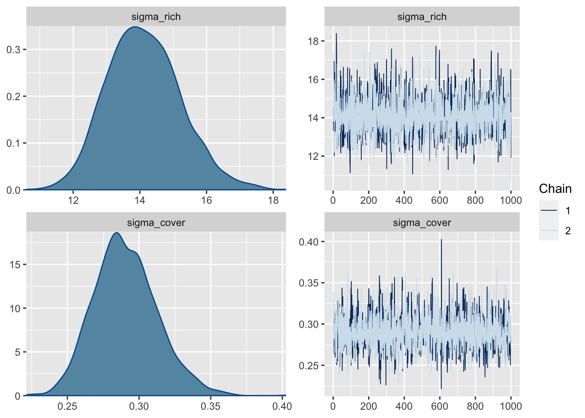

library(piecewiseSEM)
data(keeley)13 Bayesian causal models
This chapter assumes you are aware of causal inference, causal graphs and structural equation models. For a general intro on these topics, see my lecture notes on advanced regression models, section causal inference here.
In this chapter, I will show you a few options to fit SEMs with Bayesian methods. We will use the keeley data provided in the package piecewiseSEM
13.1 Lavaan and blavaan
Laavan is the most popular package to fit multivariate normal SEMs. The advantage of lavaan (over piecewiseSEM which we will use later) is that it can easily include latent factors in the analysis (which we will not use in this example). The downside of lavaan is that it can’t handle non-Gaussian responses.
Here the standard lavaan model:
library(lavaan)This is lavaan 0.6-17
lavaan is FREE software! Please report any bugs.library(lavaanPlot)
k_mod <- "
rich ~ firesev + cover
cover ~ firesev"
k_fit_lavaan <- sem(model = k_mod, data = keeley)Warning in lav_data_full(data = data, group = group, cluster = cluster, : lavaan
WARNING: some observed variances are (at least) a factor 1000 times larger than
others; use varTable(fit) to investigatelavaanPlot(model=k_fit_lavaan, coefs = TRUE, sig = .05)Same as Bayesian fit using blavaan, which is a laavan style interface to STAN
library(blavaan)Loading required package: RcppThis is blavaan 0.5-2On multicore systems, we suggest use of future::plan("multicore") or
future::plan("multisession") for faster post-MCMC computations.k_fit_blavaan = blavaan(model = k_mod, data = keeley,
auto.var=TRUE, auto.fix.first=TRUE,
auto.cov.lv.x=TRUE)Warning in lav_data_full(data = data, group = group, cluster = cluster, : lavaan
WARNING: some observed variances are (at least) a factor 1000 times larger than
others; use varTable(fit) to investigateWarning in lav_partable_check(lavpartable, categorical = lavoptions$.categorical, : lavaan WARNING: automatically added intercepts are set to zero:
[rich cover]
SAMPLING FOR MODEL 'stanmarg' NOW (CHAIN 1).
Chain 1:
Chain 1: Gradient evaluation took 0.002524 seconds
Chain 1: 1000 transitions using 10 leapfrog steps per transition would take 25.24 seconds.
Chain 1: Adjust your expectations accordingly!
Chain 1:
Chain 1:
Chain 1: Iteration: 1 / 1500 [ 0%] (Warmup)
Chain 1: Iteration: 150 / 1500 [ 10%] (Warmup)
Chain 1: Iteration: 300 / 1500 [ 20%] (Warmup)
Chain 1: Iteration: 450 / 1500 [ 30%] (Warmup)
Chain 1: Iteration: 501 / 1500 [ 33%] (Sampling)
Chain 1: Iteration: 650 / 1500 [ 43%] (Sampling)
Chain 1: Iteration: 800 / 1500 [ 53%] (Sampling)
Chain 1: Iteration: 950 / 1500 [ 63%] (Sampling)
Chain 1: Iteration: 1100 / 1500 [ 73%] (Sampling)
Chain 1: Iteration: 1250 / 1500 [ 83%] (Sampling)
Chain 1: Iteration: 1400 / 1500 [ 93%] (Sampling)
Chain 1: Iteration: 1500 / 1500 [100%] (Sampling)
Chain 1:
Chain 1: Elapsed Time: 1.682 seconds (Warm-up)
Chain 1: 0.865 seconds (Sampling)
Chain 1: 2.547 seconds (Total)
Chain 1:
SAMPLING FOR MODEL 'stanmarg' NOW (CHAIN 2).
Chain 2:
Chain 2: Gradient evaluation took 0.000143 seconds
Chain 2: 1000 transitions using 10 leapfrog steps per transition would take 1.43 seconds.
Chain 2: Adjust your expectations accordingly!
Chain 2:
Chain 2:
Chain 2: Iteration: 1 / 1500 [ 0%] (Warmup)
Chain 2: Iteration: 150 / 1500 [ 10%] (Warmup)
Chain 2: Iteration: 300 / 1500 [ 20%] (Warmup)
Chain 2: Iteration: 450 / 1500 [ 30%] (Warmup)
Chain 2: Iteration: 501 / 1500 [ 33%] (Sampling)
Chain 2: Iteration: 650 / 1500 [ 43%] (Sampling)
Chain 2: Iteration: 800 / 1500 [ 53%] (Sampling)
Chain 2: Iteration: 950 / 1500 [ 63%] (Sampling)
Chain 2: Iteration: 1100 / 1500 [ 73%] (Sampling)
Chain 2: Iteration: 1250 / 1500 [ 83%] (Sampling)
Chain 2: Iteration: 1400 / 1500 [ 93%] (Sampling)
Chain 2: Iteration: 1500 / 1500 [100%] (Sampling)
Chain 2:
Chain 2: Elapsed Time: 1.659 seconds (Warm-up)
Chain 2: 0.88 seconds (Sampling)
Chain 2: 2.539 seconds (Total)
Chain 2:
SAMPLING FOR MODEL 'stanmarg' NOW (CHAIN 3).
Chain 3:
Chain 3: Gradient evaluation took 0.000163 seconds
Chain 3: 1000 transitions using 10 leapfrog steps per transition would take 1.63 seconds.
Chain 3: Adjust your expectations accordingly!
Chain 3:
Chain 3:
Chain 3: Iteration: 1 / 1500 [ 0%] (Warmup)
Chain 3: Iteration: 150 / 1500 [ 10%] (Warmup)
Chain 3: Iteration: 300 / 1500 [ 20%] (Warmup)
Chain 3: Iteration: 450 / 1500 [ 30%] (Warmup)
Chain 3: Iteration: 501 / 1500 [ 33%] (Sampling)
Chain 3: Iteration: 650 / 1500 [ 43%] (Sampling)
Chain 3: Iteration: 800 / 1500 [ 53%] (Sampling)
Chain 3: Iteration: 950 / 1500 [ 63%] (Sampling)
Chain 3: Iteration: 1100 / 1500 [ 73%] (Sampling)
Chain 3: Iteration: 1250 / 1500 [ 83%] (Sampling)
Chain 3: Iteration: 1400 / 1500 [ 93%] (Sampling)
Chain 3: Iteration: 1500 / 1500 [100%] (Sampling)
Chain 3:
Chain 3: Elapsed Time: 1.93 seconds (Warm-up)
Chain 3: 0.873 seconds (Sampling)
Chain 3: 2.803 seconds (Total)
Chain 3:
Computing post-estimation metrics (including lvs if requested)...summary(k_fit_blavaan)blavaan 0.5.2 ended normally after 1000 iterations
Estimator BAYES
Optimization method MCMC
Number of model parameters 5
Number of observations 90
Statistic MargLogLik PPP
Value NA 0.509
Parameter Estimates:
Regressions:
Estimate Post.SD pi.lower pi.upper Rhat Prior
rich ~
firesev -2.658 0.981 -4.572 -0.725 1.000 normal(0,10)
cover 8.115 4.637 -1.135 17.104 0.999 normal(0,10)
cover ~
firesev -0.084 0.019 -0.121 -0.046 1.000 normal(0,10)
Variances:
Estimate Post.SD pi.lower pi.upper Rhat Prior
.rich 183.777 26.783 138.601 241.632 1.000 gamma(1,.5)[sd]
.cover 0.084 0.012 0.063 0.111 1.000 gamma(1,.5)[sd]lavaanPlot(model=k_fit_blavaan, coefs = TRUE, sig = .05)13.2 Piecewise SEMs
The piecewiseSEM allows you to create a causal model from a set of standard GLMMs. Advantage is that it can handle standard GLMMs. Disadvantage is that it can’t handle latent variables
k_fit_psem <- psem(
lm(rich ~ firesev + cover, data=keeley),
lm(cover ~ firesev, data=keeley),
data = keeley
)
summary(k_fit_psem)
Structural Equation Model of k_fit_psem
Call:
rich ~ firesev + cover
cover ~ firesev
AIC
768.968
---
Tests of directed separation:
No independence claims present. Tests of directed separation not possible.
--
Global goodness-of-fit:
Chi-Squared = 0 with P-value = 1 and on 0 degrees of freedom
Fisher's C = NA with P-value = NA and on 0 degrees of freedom
---
Coefficients:
Response Predictor Estimate Std.Error DF Crit.Value P.Value Std.Estimate
rich firesev -2.5308 0.9926 87 -2.5496 0.0125 -0.2768 *
rich cover 9.9105 5.1701 87 1.9169 0.0585 0.2081
cover firesev -0.0839 0.0184 88 -4.5594 0.0000 -0.4371 ***
Signif. codes: 0 '***' 0.001 '**' 0.01 '*' 0.05
---
Individual R-squared:
Response method R.squared
rich none 0.17
cover none 0.19Piecewise SEMs can pretty much in the same way be code in brm:
library(brms)Loading 'brms' package (version 2.17.0). Useful instructions
can be found by typing help('brms'). A more detailed introduction
to the package is available through vignette('brms_overview').
Attaching package: 'brms'The following object is masked from 'package:stats':
arrich_mod <- bf(rich ~ firesev + cover)
cover_mod <- bf(cover ~ firesev)
k_fit_brms <- brm(rich_mod +
cover_mod +
set_rescor(FALSE),
data=keeley,
cores=4, chains = 2)Compiling Stan program...Trying to compile a simple C fileRunning /Library/Frameworks/R.framework/Resources/bin/R CMD SHLIB foo.c
clang -mmacosx-version-min=10.13 -I"/Library/Frameworks/R.framework/Resources/include" -DNDEBUG -I"/Library/Frameworks/R.framework/Versions/4.2/Resources/library/Rcpp/include/" -I"/Library/Frameworks/R.framework/Versions/4.2/Resources/library/RcppEigen/include/" -I"/Library/Frameworks/R.framework/Versions/4.2/Resources/library/RcppEigen/include/unsupported" -I"/Library/Frameworks/R.framework/Versions/4.2/Resources/library/BH/include" -I"/Library/Frameworks/R.framework/Versions/4.2/Resources/library/StanHeaders/include/src/" -I"/Library/Frameworks/R.framework/Versions/4.2/Resources/library/StanHeaders/include/" -I"/Library/Frameworks/R.framework/Versions/4.2/Resources/library/RcppParallel/include/" -I"/Library/Frameworks/R.framework/Versions/4.2/Resources/library/rstan/include" -DEIGEN_NO_DEBUG -DBOOST_DISABLE_ASSERTS -DBOOST_PENDING_INTEGER_LOG2_HPP -DSTAN_THREADS -DUSE_STANC3 -DSTRICT_R_HEADERS -DBOOST_PHOENIX_NO_VARIADIC_EXPRESSION -D_HAS_AUTO_PTR_ETC=0 -include '/Library/Frameworks/R.framework/Versions/4.2/Resources/library/StanHeaders/include/stan/math/prim/fun/Eigen.hpp' -D_REENTRANT -DRCPP_PARALLEL_USE_TBB=1 -I/usr/local/include -fPIC -Wall -g -O2 -c foo.c -o foo.o
In file included from <built-in>:1:
In file included from /Library/Frameworks/R.framework/Versions/4.2/Resources/library/StanHeaders/include/stan/math/prim/fun/Eigen.hpp:22:
In file included from /Library/Frameworks/R.framework/Versions/4.2/Resources/library/RcppEigen/include/Eigen/Dense:1:
In file included from /Library/Frameworks/R.framework/Versions/4.2/Resources/library/RcppEigen/include/Eigen/Core:19:
/Library/Frameworks/R.framework/Versions/4.2/Resources/library/RcppEigen/include/Eigen/src/Core/util/Macros.h:679:10: fatal error: 'cmath' file not found
#include <cmath>
^~~~~~~
1 error generated.
make: *** [foo.o] Error 1Start samplingplot(k_fit_brms)
13.3 Freestyle JAGS model
If you want latent variables and non-Gaussian responses, you will have to code by hand. Here an example, which is effectively a piecewise SEM bout could be extended to include latent variables.
TODO
library(EcoData)
library(effects)
islandPsem <- psem(
lm(windObs ~ sAltitude, data = volcanoisland),
glm(lizardsObs ~ sAltitude , family = binomial, data = volcanoisland),
glm(beetles ~ windObs + lizardsObs, family = poisson, data = volcanoisland)
)
summary(islandPsem)
library(rjags)
library(R2jags)
# 1) Model definition exactly how we created our data
modelCode = "
model{
# Likelihood
for(i in 1:i.max){
Wind[i] ~ dnorm(windPred[i], windPrec)
windPred[i] <- intW + altW*Alt[i]
Ducks[i] ~ dbern(lambdaD[i])
logit(lambdaD[i]) <- intD + altD*Alt[i] + habitatD * Habitat[i] + soilD * SoilTexture[i]
Beetles[i] ~ dpois(lambda[i])
lambda[i] <- exp(mu[i] )
mu[i] <- intB + altB*Alt[i] + alt2B*Alt[i]*Alt[i] + windB * Wind[i] + OLREB[i]
}
# Prior distributions
intB ~ dnorm(0,0.001)
altB ~ dnorm(0,0.001)
alt2B ~ dnorm(0,0.001)
windB ~ dnorm(0,0.001)
for(i in 1:i.max){
OLREB[i] ~ dnorm(0,precOLREB)
}
precOLREB ~ dgamma(0.001,0.001)
intW ~ dnorm(0,0.001)
altW ~ dnorm(0,0.001)
windPrec <- 1/(windSD * windSD)
windSD ~ dunif(0,100)
intD ~ dnorm(0,0.001)
altD ~ dnorm(0,0.001)
habitatD ~ dnorm(0,0.001)
soilD ~ dnorm(0,0.001)
# posterior predictive simulations
for(i in 1:i.max){
yPred[i] ~ dpois(lambda[i])
}
}
"
windPartiallObs <- islandData$windObs
sel = sample.int(1000, 500)
windPartiallObs[sel] = NA
# 2) Set up a list that contains all the necessary data (here, including parameters of the prior distribution)
Data = list(Beetles = islandData$beetles, Alt = islandData$sAltitude, i.max = length(islandData$sAltitude), Wind = windPartiallObs, Ducks = islandData$ducks, Habitat = islandData$habitatQuality, SoilTexture = islandData$earth)
# 3) Specify a function to generate inital values for the parameters
# Out of laziness, we don't provide inits for the other parameters. For a real study, provide overdispersed sampling functions for all parameters
inits.fn <- function() list(intB = rnorm(1), altB = rnorm(1), alt2B = rnorm(1))
library(R2jags)
R2JagsResults <- jags(data=Data, inits=inits.fn, parameters.to.save=c("intB","altB","alt2B", "intW", "altW", "windB", "intD", "altD", "habitatD", "soilD"), n.chains=3, n.iter=10000, model.file=textConnection(modelCode), DIC = F)
plot(R2JagsResults)
print(R2JagsResults)
library(DHARMa)
simulations = R2JagsResults$BUGSoutput$sims.list$yPred
pred = apply(simulations, 2, median)
dim(simulations)
sim = createDHARMa(simulatedResponse = t(simulations), observedResponse = islandData$beetles, fittedPredictedResponse = pred, integerResponse = T)
plot(sim)
plotResiduals(islandData$year, sim$scaledResiduals, asFactor = T)
testSpatialAutocorrelation(sim)